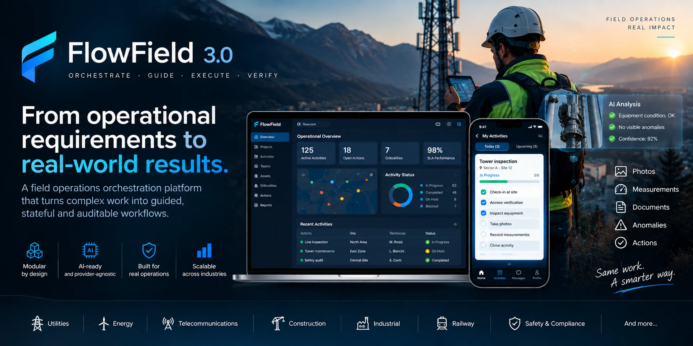

Forms & Spreadsheets
Information is recorded, but process progression remains manual.

FlowField 3.0 transforms field activities into controlled, guided and auditable workflows.
Instead of simply collecting information, FlowField governs how work progresses: what must happen, under which conditions, who is authorized to act and what evidence is required before an activity can continue or close.
Information is recorded, but process progression remains manual.
Operational decisions become scattered and difficult to audit.
Evidence can lose context when stored separately from the activity.
Teams depend on human coordination for exceptions and follow-up.
Operational complexity stays inside the platform. The technician receives a simple guided experience.
Designed for configuration, planning, supervision and operational governance.
Designed to show technicians exactly what they need to do next.
Activity types are composed from capability blocks rather than hardcoded industry-specific applications.
Operator, activity, location, authorization and access.
PPE, risk, permits, safety conditions and stop-work control.
Identification, verification, installation and asset lifecycle.
Photos, video, measurements, notes, checklists and field data.
Anomaly classification, severity, impact and validation.
Formal documents, compliance records and controlled documentation.
Corrective actions, ownership, priority, SLA and completion.
State, conditions, branching, blocking, escalation and closure.
Portfolio, KPI, SLA, audit, compliance and organizational oversight.
Activity definition, workflow configuration, planning and control.
Team supervision, assignments, actions, escalation and validation.
Guided field execution, evidence capture and operational reporting.
AI can interpret, assist and analyze. FlowField remains responsible for workflow authority.
FlowField is designed to work with Outy, the edge-oriented AI layer developed within the CashOut ecosystem.
Cloud APIs, private models, enterprise gateways and local inference can be connected without redesigning the workflow engine.
Technician photographs can be analyzed by cloud or edge Vision-Language Models to produce derived observations.
Interpret
Assist
Suggest
Analyze
Validate
Authorize
Transition
Block / Close
AI analysis becomes a derived interpretation.
FlowField can submit technician photographs to a Vision-Language Model, currently through a GPT-based cloud reference implementation.
The same VLM interface can later run through private or edge inference when deployment hardware allows it.
Centralized deployment and hosted intelligence services.
Customer-controlled infrastructure and private integrations.
Central orchestration combined with private or local services.
Operational and AI capabilities positioned closer to field execution.
The public repository documents FlowField's architecture without exposing proprietary orchestration rules or customer-specific implementations.
Configure it. Pilot it. Validate it in the field. Then expand.